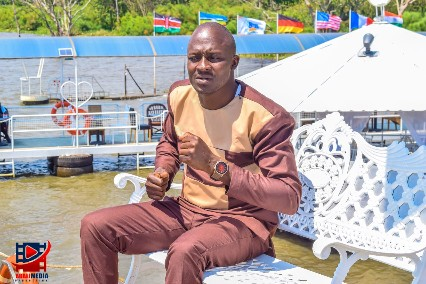
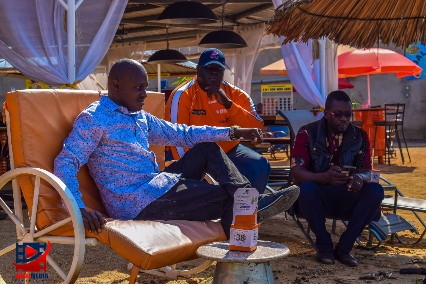

Angelic Music Band (AMB) is a music band which plays both ohangla and gospel music. It was formed by an artist called Kevin Otieno popularly known as ODERO JAKASULE whos is known well in ohangla industry for his electrifying perfomances of such music.
 AMB performs in different special occasions such as weedings, Nyombo (dowry ceremony), Anniversaries, Funerals and others. We also hire public address and do lighting for night occasions. we also have Drumset, Keyboards and others. For inquiry please contact us via the number in band logo.
ANGELIC MUSIC BAND is group which has 10 members;
Remember you can follow us through our differens social media platforms: